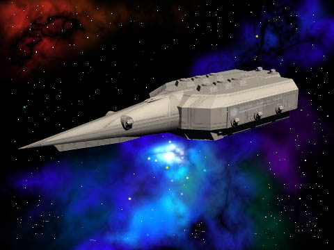
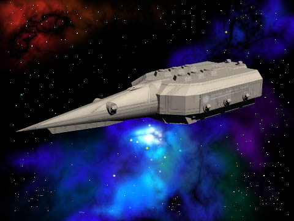

BARD PAPER: SARA0018
BARD PAPER: SARA0018 | Home | Traveller | BARD | SARA |
Regulator-Class System Defense Boat
design by Chris Cox

BARD PAPER: SARA0018 | Home | Traveller | BARD | SARA |
design by Chris Cox

Deckplans are available.
Regulator-Class System Defense Boat
| Displacement: 990 tons | Hull Armor: 180 |
| Length:89.5 meters | Volume: 13,860 m3 |
| Price: 649.3 MCr | Target Size: S |
| Configuration: AF Needle | Tech Level: 15 |
| Mass (Loaded/Unloaded): 11,703 / 11,298 | |
The N-PAW may be overpowerd:
| Name | Short | Medium | Long | Extreme |
| 2,500MJ N-PAW | 10:250 | 20:250 | 40:250 | 80:147 |
| 375Mj Laser | 10:1/15-48 | 20:1/15-48 | 40:1/15-48 | 80:1/15-48 |
Area Surface Hits Internal Damage Systems
(1D20)
1 1, AL: 2-11, Ant 1-12, Wpn: 13-20, Fuel PP-14H
MD-4H
2-3 1-10, Ant Fuel FPP-4H
AG-2H
4-5 1-9, Ant 1-10, Wpn: 11-20, Fuel FT-53H
AL-5x1h
6-7 1-5 Scr 1-10, Elec: 11-20, Qrts LS-25H
HULL-10H
8-9 1-4, Wpn: 5-19, Qrts: 20, Fuel AEMS-2x2h
ELS-13H
10-11 Wpn PEMS-1h
MFD-15x2h
12-13 1-10, Elec: 11-20, Qrts EMM-1H PEMS
Ant-2h
14-15 1-4, Wpn: 5-20, Fuel MS-1H EMM
Rad-13h
16-17 1-4, EMM Rad 1-4, Eng: 5-20, Fuel LSR-30x1H
ND-1H
18-19 1-4, EMM Rad: 5, CH 1-5, Hold: 6-9, Eng: 10-20, Fuel LT-12x1H
LBth-10x1h
20 1: AL Eng ST-12x1H All
Others-1h
PA-12H